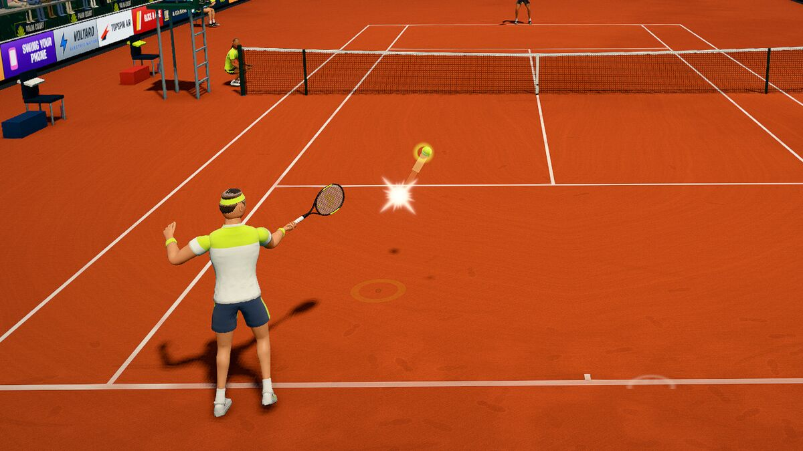

Key takeaways
- Start with an eastern forehand grip, the "handshake" grip. The semi-western grip gives more topspin once you are comfortable.
- Be ready early: turn your shoulders as soon as you see which side the ball is coming to, before it bounces.
- Swing from low to high and meet the ball in front of your body. Late contact is the most common forehand fault.
- The power comes from the legs, hips and trunk, with the arm following. Do not try to hit hard with the arm alone.
Choose a grip
The handle of a racket has eight flat sides, called bevels. Where the base knuckle of your index finger sits on them is what a grip name describes. The picture shows the most useful positions for a right-handed player.
- Eastern forehand is the best place to start. Hold the racket by the throat with the strings vertical and "shake hands" with the handle. The palm lies roughly parallel to the strings, so the face is square to the ball at contact with no wrist effort.
- Semi-western sits one bevel lower, an eighth of a turn further under the handle. It closes the racket face slightly, so a natural low-to-high swing brushes up the back of the ball and gives topspin. It is very widely used in the modern game, but it makes low balls harder and takes some getting used to.
- Western is further still. It produces very heavy spin on high balls and is awkward on low ones.
If you are unsure, use eastern forehand. You can always move round the handle later. Whatever you use, keep the grip firm but not tight, a handshake rather than a squeeze, and tighten your hold only at the moment of contact.
Be ready: stance and split step
Stand with your feet wider than your shoulders, knees bent, weight on the balls of your feet and the racket held in front of you with both hands, your free hand cradling the throat. As your opponent hits the ball, take a small hop, the split step, so that you land just as they make contact. It primes your legs to push off in any direction. A player who is flat-footed when the ball arrives is already late.
Turn early
As soon as you see the ball is coming to your forehand side, turn. The shoulders and hips rotate so your chest faces the side fence rather than the net, and the racket goes back with them. Your free hand guides the racket back at the throat and then extends in front of your body to help your balance. Do this unit turn while the ball is still coming and before it bounces, not afterwards. Many mishit forehands are simply the result of an arm swing begun from a body that is not turned.
Feet and spacing
You want the ball to arrive about an arm's length from your body, at around waist height, in front of your front hip. Use small adjustment steps to find that spot rather than a single big lunge. Stances vary, and all are legitimate:
- Neutral: the front foot steps across towards the ball and the shoulders turn side-on. A good one for beginners.
- Semi-open and open: the feet point more towards the net or the side fence and the hips rotate strongly through the shot. Common when you are on the run or hitting with heavy topspin.
Pick the one that gets you balanced for the ball you have, then push off your back leg into the swing.
The swing: low to high
- Let the racket head drop below the height of the ball as you start forward. A beginner can think of it as a small "loop" or a straight back and drop.
- Push with your legs, then rotate the hips, then the trunk, and let the arm and racket follow. The sequence is ground, legs, hips, trunk, arm, racket. Power that starts in the arm has nowhere to go.
- Swing up and forward through the ball, with the racket face roughly vertical or slightly closed at contact. The rising path brushes the back of the ball and adds topspin, which helps the ball clear the net and then dip into the court.
- Finish with the racket up and across, over your opposite shoulder, and recover to a ready position.
Where to meet the ball
Contact should be in front: with the arm comfortably extended and the ball ahead of the front hip, roughly level with your waist. The wrist stays firm and slightly laid back, and your head stays still and watching the contact area for a moment after the ball has gone. A ball hit beside or behind the hip goes late, and can only be steered with the arm, which leads to a weak shot or one that sprays out sideways. If your forehand feels hurried, ask yourself first whether the contact was late.
The ideal spot shifts with the ball. Against a quick, deep ball you have less time, so a shorter backswing and an earlier turn are what keep the contact in front of you.
Common mistakes and fixes
| What you see | Likely cause | What to try |
|---|---|---|
| The ball goes late and out to the side | Contact beside or behind the hip | Turn earlier, take the racket back earlier, and meet the ball further in front. |
| Balls fly long | Racket face open, or swinging flat and hard | Swing lower to higher, aim higher over the net and add topspin. |
| Balls land in the net | Swinging level or downwards, or contact too low | Bend your knees to get under the ball and finish high. |
| All arm, no power | Body not turning, feet flat | Start the swing with the legs and hips and finish with the chest facing the net. |
| Wobbly contact | Grip too tight or loose, head moving | Keep the grip firm but not tight, and watch the contact point. |
| Racket stops dead | No follow-through | Finish over the opposite shoulder every time. |
Drills to practise
- Bounce-hit. Say "bounce" aloud as the ball bounces and "hit" at contact. It builds your sense of rhythm and makes you start the swing earlier.
- Shadow swings. Ten slow swings in front of a window or mirror, pausing at the end of the turn and at the finish.
- Mini tennis. Rally gently with a partner from service line to service line, using a short, smooth swing, and count how many you can get in a row.
- Wall work. A wall returns every ball. Stand about 6 to 8 metres back and keep the rally going, aiming just above the net line painted or imagined on the wall.
- Cross-court ten. From the baseline, trade forehands diagonally with a partner and try to make ten in a row. If the ball lands in the court, stay alive; if you are consistently long, add topspin or aim a little higher.
Try it in Palm Court
In Palm Court your player runs for you, but the swing is yours, and it teaches the same lessons. The screen says Forehand as the ball comes to that side, and the guided rally that opens the game starts with forehands. Switch on the Timing meter under Settings, Gameplay: the early or late bar after each shot is a close cousin of "was my contact in front?". Play Target practice under Play, Training, Drills, 20 balls with glowing zones, and watch where the ball goes: with a phone or a camera a slightly earlier swing pulls the ball cross-court and a later one sends it down the line, while with a mouse or a controller you aim with the swipe or the stick. The how to play page explains the shot timing, the mouse guide shows how a swipe becomes a forehand, and the groundstroke tactics guide covers where to send the ball.
